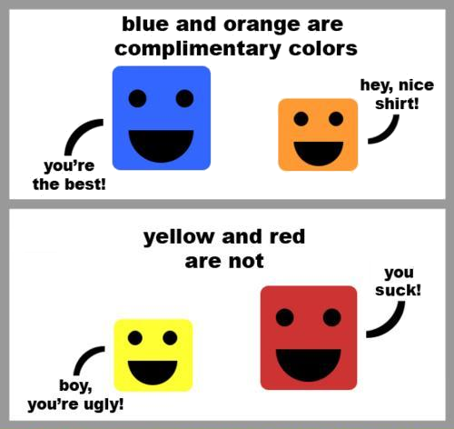

Your trojan doesn't support impress.js. Get with the times and
install Chrome already...
Confusing & completely unreadable JavaScript performance tricks that you will most
probably never use,
& some you might...
So who am I?
Some people call me the space cowboy...
Some call me the gangster of love...
Some call me that fluffy guy from Madagascar...
Disclaimer: Most of the items I am going to go through are very situation dependant.
Most are only worth while inside loops or heavily utilised code (~500,000 ops/sec). Please don't use these all over the place...
If you havn't already heard of
jsPerf, you need to check it out.
From the site:
jsPerf aims to provide an easy way to create and share test cases, comparing the performance
of different JavaScript snippets by running benchmarks.
The Unary + (or -) Operator.
The unary + operator can be used to coerce all javascript types to a Number.
When used on types other than String, it will call valueOf() or toString() (in that order) and then attempt to convert the result to a Number.
For Example:
var string = "123",
bool = true,
date = new Date(),
object1 = {},
object2 = {};
object1.valueOf = function() {
return "456";
};
object2.toString = function() {
return "0x315";
};
alert(+string); // 123
alert(+bool); // 1
alert(+date); // seconds since Unix epoch
alert(+object1); // 456
alert(+object2); // 789
As you can see from the
jsPerf results, the unary operator approach is faster than a parseInt() in some circumstances.
While not exactly readable, depending on your target browsers, situation, etc this may be a valid option.
In some cases the Bitwise Or
(|) can be used in place of the Logical Or
(||) for an increase in performance.
jsPerf
The Bitwise Xor operator (^) compares two bits and returns 1 if they are different or 0 if they are the same.
For Example:
alert(0^0); // 0
alert(0^1); // 1
alert(1^0); // 1
alert(1^1); // 0
Similar to the Bitwise Or, the Bitwise Xor can out perform Logical Or but you need to keep in mind though Xor is exclusive.
alert(0^0); // 0
alert(0^1); // 1
alert(1^0); // 1
alert(1^1); // 0
alert(0||0); // 0
alert(0||1); // 1
alert(1||0); // 1
alert(1||1); // 1
Xor can also be used in a self assignment, making it great for toggling.
var x = 0;
x ^= 1;
alert(x); // 1
x ^= 1;
alert(x); // 0
jsPerf

Complement (~) and Sentinels
The Complement (~) when used as a unary operator, first converts n to an Integer and then performs -(n+1)
For example:
var x = 123,
y = 456.789;
alert(~x); // -124
alert(~y); // -457
This provides a nice oportunity when dealing with functions that return setinal valuse such as String.indexOf() or jQuery.inArray()
These functions return an index between 0 and N for success and -1 for a failure. This usualy requires code to check the return value is >= 0
With our friend the ~ we can remove the need for some characters and gain a tiny little performace boost in firefox.
jsPerf
BONUS: With all of the bitwise operators, any Number is converted to a 32 Integer before the operation takes place.
This means that a double tilde can also be used to floor a number. (If its positive).
There are also a couple of other ways to try and optimise flooring as can be seen from the
jsPerf Tests.
It should be no suprise that using objects directly rather than their convenience methods would be faster.
One place we can take advanage of this is Array manipulation.
Quite often a loop will be used to push a subset of objects into an Array.
For Example:
var x = [true, false, true, true, false, false, true],
y = [];
for (var i = 0; i < x.length; i++) {
if (x[i]) {
y.push(x[i]);
}
}
In highly optimised code, it can be more benefitial to just directly add the new item to the end of the array.
jsPerf
Also refered to as Bit Twiddling.
Usualy used in highly optimised code where memory usage is important.
These sorts of practices are common in C++, games programming, etc.
For Example:
var permissions,
CREATE = 1 << 0, // 0001
READ = 1 << 1, // 0010
UPDATE = 1 << 2, // 0100
DELETE = 1 << 3, // 1000
CRUD = CREATE ^ READ ^ UPDATE ^ DELETE; // 1111
// Set permissions to full CRUD
permissions |= CRUD;
alert(permissions.toString(2)); // 1111
// Remove DELETE permision
permissions &= ~DELETE;
alert(permissions.toString(2)); // 0111
// Toggle CREATE permissions
permissions ^= CREATE;
alert(permissions.toString(2)); // 0110
permissions ^= CREATE;
alert(permissions.toString(2)); // 0111
// Check READ permissions
if (permissions & READ) // 1 (truthy)
{
alert('Read all the things...');
}
Not only is this method faster to execute, (
jsPerf) but uses much less memory compared to using objects and properties to represent the same information.
Memoization is a technique for caching the results of function calls to avoid additional computation.
And is probably the one performance technique from today you might use.
Memoization is however not appropriate if the method's output changes over time, is unlikely to be called again with the same parameters or the computation is actualy faster that the added overhead.
There are a lot of Memoization implementations, however Addy Osmani
(@addyosmani) has recently done a great writeup on the most performant implementation.
/*
* memoize.js
* by @philogb and @addyosmani
* with further optimizations by @mathias
* and @DmitryBaranovsk
* perf tests: http://bit.ly/q3zpG3
* Released under an MIT license.
*/
function memoize( fn ) {
return function () {
var args = Array.prototype.slice.call(arguments),
hash = "",
i = args.length;
currentArg = null;
while (i--) {
currentArg = args[i];
hash += (currentArg === Object(currentArg)) ?
JSON.stringify(currentArg) : currentArg;
fn.memoize || (fn.memoize = {});
}
return (hash in fn.memoize) ? fn.memoize[hash] :
fn.memoize[hash] = fn.apply(this, args);
};
}
It should be no surprise Memoizing functionality such as the fibinacy sequence yeilds high perfrmance gains.
jsPerf
Now for a contrived example!
Putting it all together.
var GetAirports = function(filter, credentials) {
var result = [],
i = 0;
// Check we are allowed to view airports
if (credentials.canViewAirports) {
// Check are allowed to search by Id and if an Id was entered
if (credentials.canSearchById && parseInt(filter)) {
return [airports[filter]];
}
filter = filter.toUpperCase();
// Search for the filter anywhere in either the code, name or location properties
for (i; i < airports.length; i++) {
if (airports[i].code.indexOf(filter) >= 0 ||
airports[i].name.toUpperCase().indexOf(filter) >= 0 ||
airports[i].location.toUpperCase().indexOf(filter) >= 0) {
// Add matches to the result
result.push(airports[i]);
}
}
return result;
}
};
Incremental implementation of bitwise changes.
jsPerf.
And now with memoization.
jsPerf.